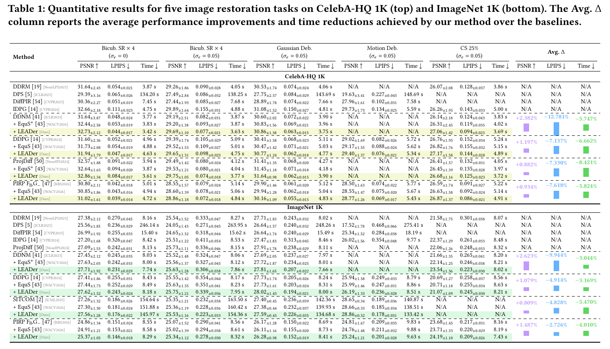
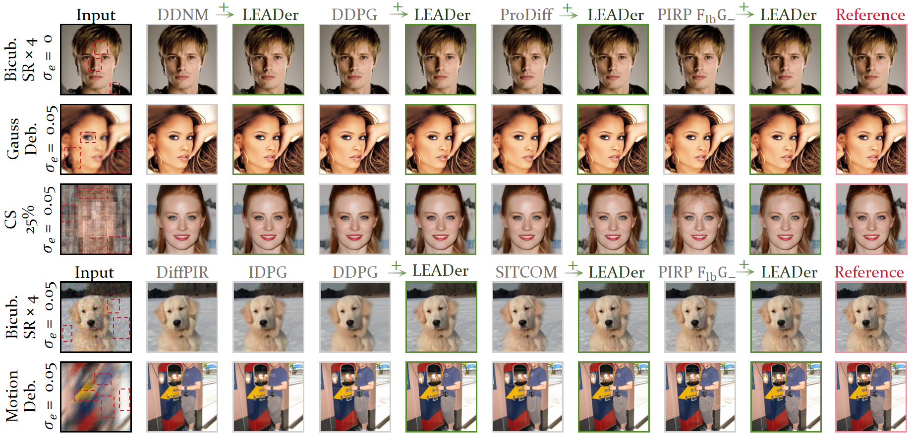
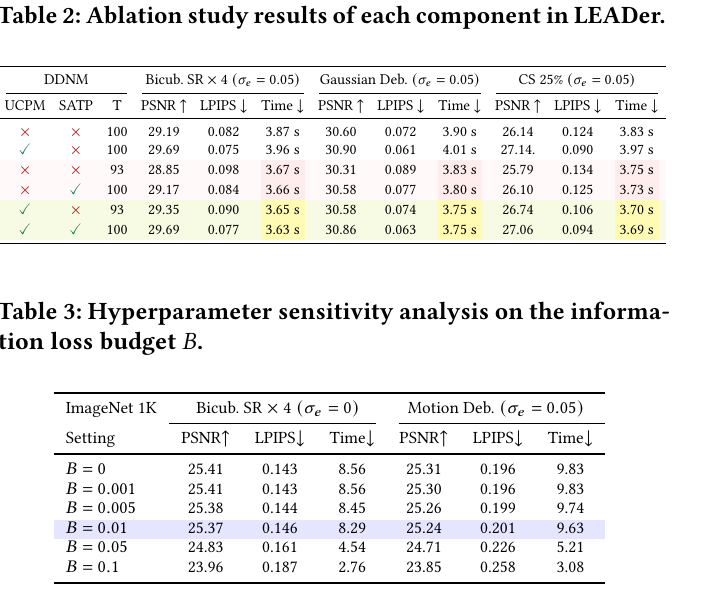
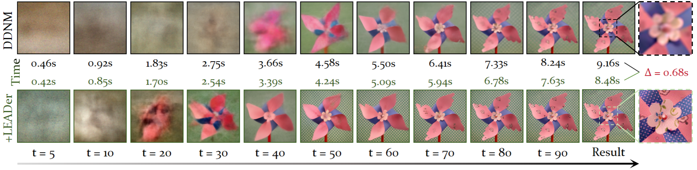
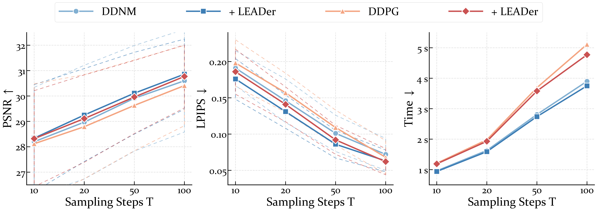

Adapts null-space prior strength to preserve reliable details and suppress uncertain artifacts.
Preprint 2026
Plug-and-play Image Restoration
LEADer
Local Epistemic Uncertainty Guided Active Sampling for Plug-and-play Diffusive Image Restoration
LEADer uses local epistemic uncertainty to actively control both where a diffusion prior should intervene and when redundant sampling steps can be skipped.

Uses uncertainty trace to skip stationary sampling phases while keeping bounded error.
Improves multiple DMIR baselines without retraining and with negligible memory overhead.
Abstract
Uncertainty turns diffusion restoration from fixed sampling into active sampling.
Diffusion model-based image restoration methods usually rely on fixed data constraints and uniform step sizes, which can create spatial distortions, lose fine details, and introduce redundant computation. LEADer addresses these limitations through a Local Epistemic Uncertainty Guided Active Sampling framework.
In the spatial domain, LEADer uses pixel-wise uncertainty to dynamically modulate prior strength in the null space. In the temporal domain, it quantifies sampling stability through uncertainty trace and adaptively prunes the denoising trajectory. The framework maintains strict data consistency, provides a deterministic skip-sampling error bound, and can be integrated into existing DMIR methods.
Method
LEADer couples local reliability with diffusion sampling decisions.
Estimate local epistemic uncertainty
At each reverse step, LEADer estimates a local uncertainty map that reveals where the current restoration state is reliable or ambiguous.
Modulate the null-space prior
Uncertainty-Calibrated Prior Modulation adjusts the prior contribution region by region, balancing data fidelity and generative detail.
Prune redundant timesteps
State-Aware Trajectory Pruning monitors uncertainty trace and selects an adaptive step size when the process becomes stable.
Results
Higher restoration quality with faster sampling.
DDNM + LEADer
+2.382%
Avg. PSNR
DDNM + LEADer
-12.781%
Avg. LPIPS
ProjDiff + LEADer
-8.421%
Avg. Time
DDPG + LEADer
+1.197%
Avg. PSNR
Table 1 Extract
Average gains on CelebA-HQ 1K across five restoration tasks
| Baseline | PSNR | LPIPS | Time |
|---|---|---|---|
| DDNM + LEADer | +2.382% | -12.781% | -5.747% |
| DDPG + LEADer | +1.197% | -7.137% | -6.662% |
| ProjDiff + LEADer | +0.882% | -7.330% | -8.421% |
| PIRP + LEADer | +0.934% | -7.618% | -5.824% |


Visual Comparison
Cleaner local structures across restoration degradations.

Ablation
UCPM and SATP provide complementary gains.
The ablation tables show that uncertainty-calibrated prior modulation improves restoration quality, while state-aware trajectory pruning reduces sampling time. Their combination gives the strongest balance of fidelity and efficiency.

Efficiency
State-aware pruning removes redundant reverse steps.


Citation
BibTeX
@article{zhang2026leader,
title={Local Epistemic Uncertainty Guided Active Sampling for Plug-and-play Diffusive Image Restoration},
author={Zhang, Jiaqi and Pang, Zheng and Gao, Rongrong and Zhang, Qiyuan and Yang, Yang},
year={2026}
}